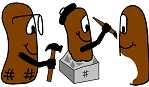
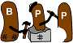

|  |
|
| Home | Intro | Docs | Download | Contact | ### |
JDJ article. This is an introduction to BPP for the Java Developer's Journal. This draft article uses out of date syntax. See the actual JDJ for current syntax.
BPT: The Beanshell Preprocessor Tutorial. A good place to start.
Javadocs. Mostly for BPP developers, but bpp.Format and bpp.BPP have useful information for developers using BPP.
|
Copyright © 2003-2004 Warren D. MacEvoy jr. <wmacevoy@mesastate.edu>
Generated from docs.html.bpp with BPP on Sat Apr 23 19:17:53 MDT 2005. HOW |
 |